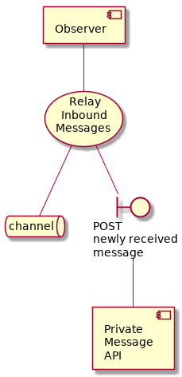
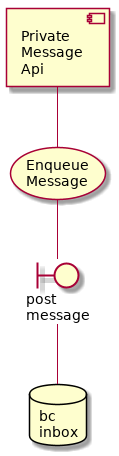

Inbound Message Flow¶
These components are involved in the flow of messages from one Government to another. Specifically, the receiving side of the equation.
Channel Observer¶
There is one of these workers for each distinct channel.
They are like listening posts. They observe every message on the channel, filter out the ones that originate from this country, and send the rest to the Private Message API for processing.
This way the rest of the system can know about new messages, and does not need to know about the configuration of channels.

Private Message API¶
When a message is sent by another country to this one, the Channel Observer component associated with that channel uses this private API to process the mesaages.
This is where many channels funnel into the one system.
The implementation is /intergov/apis/message_rx_api
The specific business logic code is in the class EnqueueMessageUseCase in the file /intergov/use_cases/enqueue_messages.py.

Object Spider¶
This worker process is a "spider" in the same sense of the word as used to describe the things that search engines use to maintain their index of web pages.
Unlike a search index spider this does not fetch web pages. It fetches the objects (files, documents, etc) that are the subject of G2G messages.
This component assumes the other Government is providing an interface that conforms with the edi3 Document API spec.
-
class
intergov.processors.obj_spider.ObjectSpider[source]¶ Iterate over the RetrieveAndStoreForeignDocumentUseCase.
![@startuml
component spider [
Object
Spider
]
cloud internet
usecase uc [
Retrieve And Store
Foreign Documents
]
spider -- uc
uc -- internet
database obj_lake [
object
lake
]
boundary lake_exists [
check if
object
exists
]
uc -- lake_exists
lake_exists -- obj_lake
boundary lake_store [
store
object
]
uc -- lake_store
lake_store -- obj_lake
database obj_acl [
object
ACL
]
boundary allow_access [
allow
access
]
uc -- allow_access
allow_access -- obj_acl
database ret [
object
retrieval
]
boundary ret_get_job [
get
job
]
uc -- ret_get_job
ret_get_job -- ret
boundary ret_del_job [
delete
job
]
uc -- ret_del_job
ret_del_job -- ret
boundary ret_post_job [
post
job
]
uc -- ret_post_job
ret_post_job -- ret
@enduml](_images/plantuml-e2463eae2f7d1c5222a1856b5c0ab824457eea04.png)
-
class
intergov.use_cases.retrieve_and_store_foreign_documents.RetrieveAndStoreForeignDocumentsUseCase(country, object_retrieval_repo, object_lake_repo, object_acl_repo)[source]¶ Processes single request from the queue to download some remote document.
The process is recursive. If an object has sub-objects, add more jobs to download them later.
Note
returns None if the object has already been downloaded
returns True in case of success
raises exceptions for errors